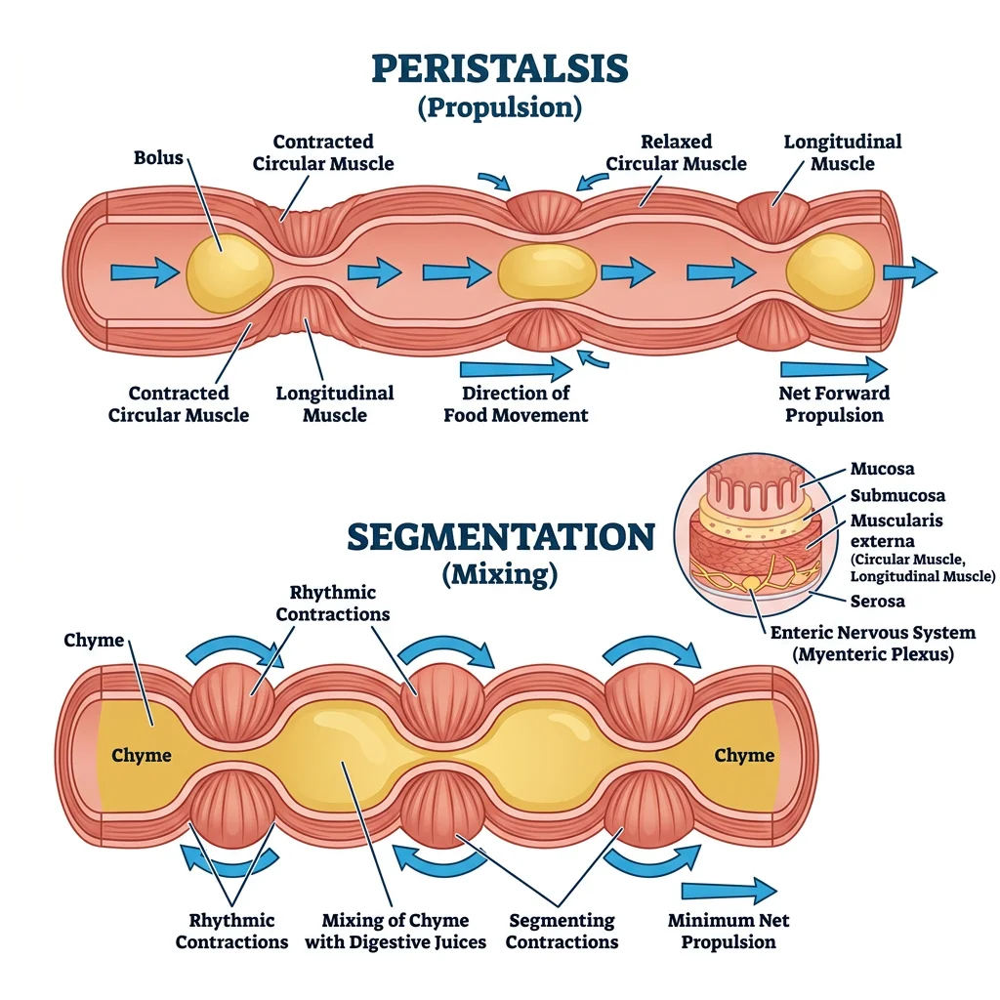
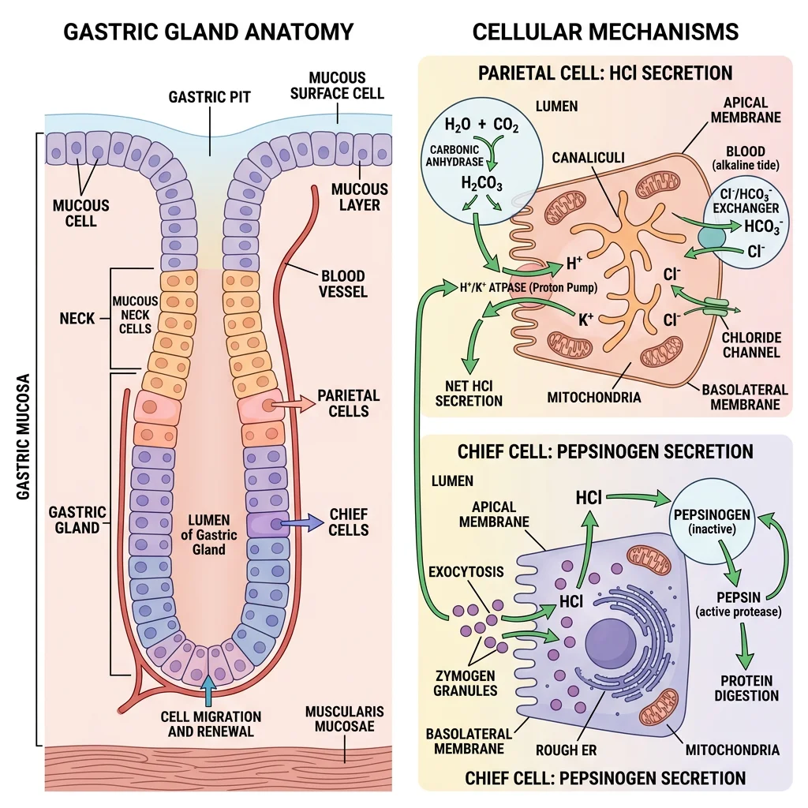
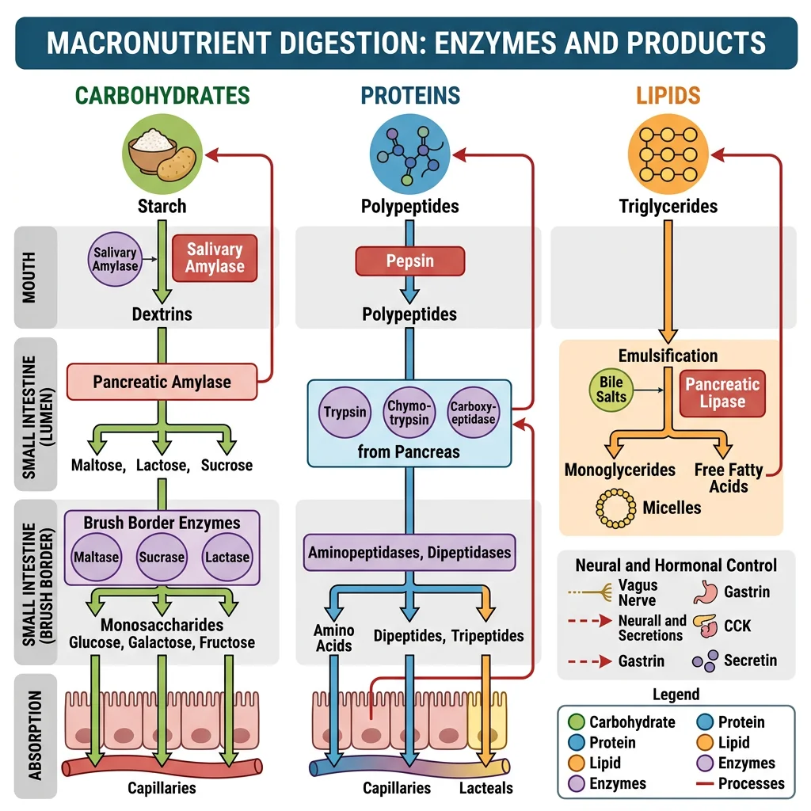
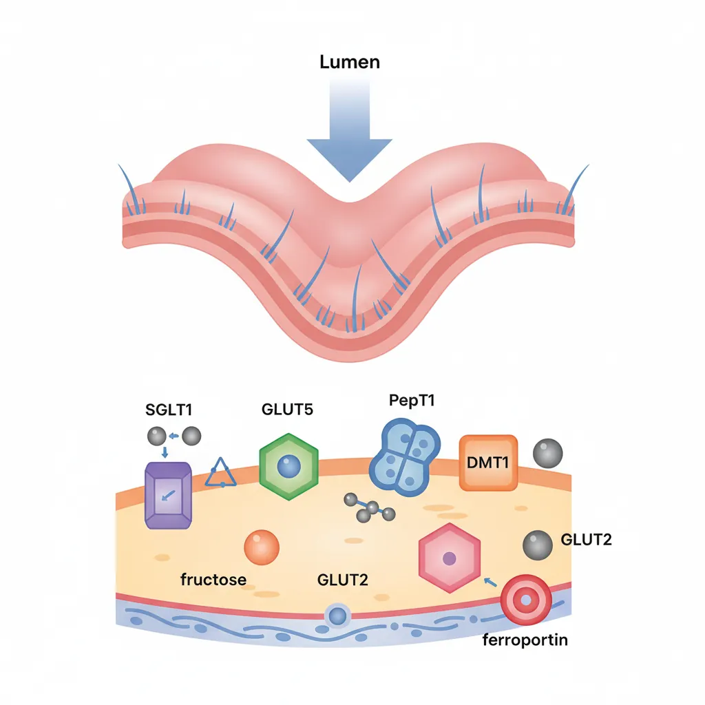
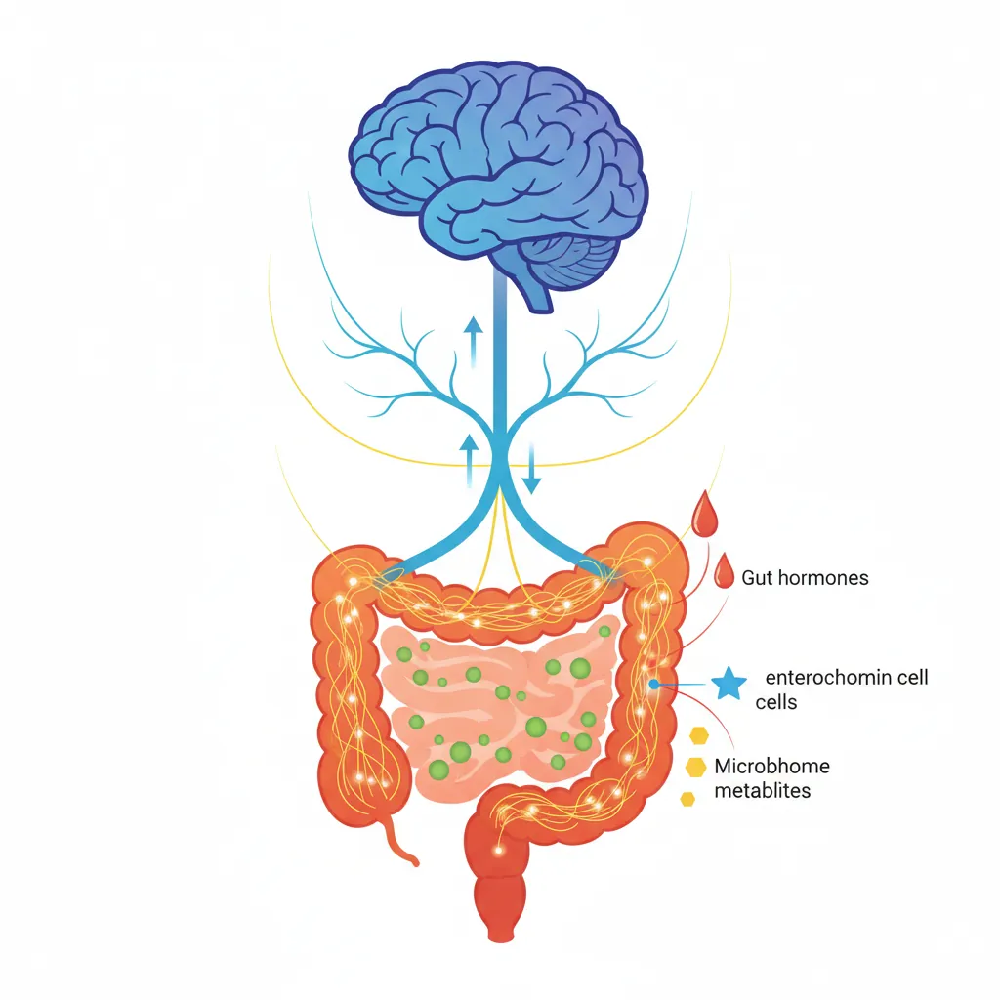
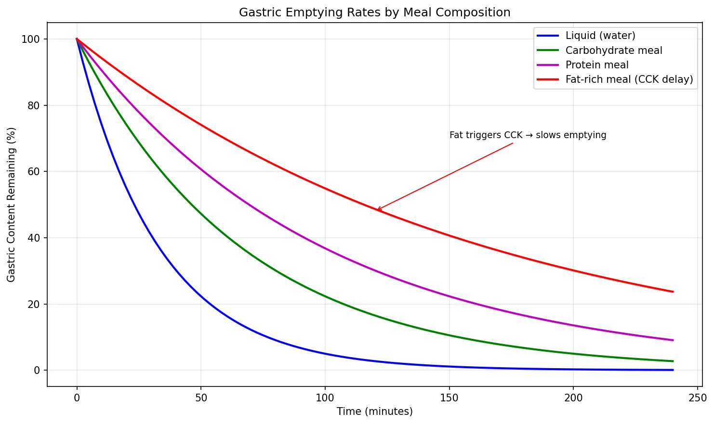

Physiology Mastery
Homeostasis & Feedback
Set points, feedback loops, allostasisNeurophysiology & Action Potentials
Neurons, action potentials, synapsesCardiac Electrophysiology & Hemodynamics
Heart rhythm, hemodynamics, cardiac outputRespiratory Mechanics & Gas Exchange
Breathing mechanics, gas exchange, V/QRenal Physiology & Fluid Balance
Nephron function, filtration, acid-baseGI Physiology & Absorption
Motility, secretion, nutrient absorptionEndocrine Regulation & Metabolism
Hormones, thyroid, adrenal, metabolismExercise Physiology & Adaptation
Acute responses, training adaptationsCellular & Membrane Physiology
Ion transport, signaling, second messengersBlood & Immune Physiology
Hematopoiesis, coagulation, immunityReproductive & Developmental
Reproduction, pregnancy, fetal physiologyIntegrative & Clinical Physiology
Stress, shock, sepsis, agingGI Motility
The gastrointestinal tract is essentially a 9-metre muscular tube that must move food in one direction (mouth → anus) while simultaneously mixing it with digestive secretions for maximal enzyme contact. This requires exquisitely coordinated muscular activity — too fast and nutrients aren't absorbed; too slow and bacterial overgrowth, bloating, and constipation result.

Smooth Muscle Physiology
GI smooth muscle is arranged in two layers: an inner circular layer (contraction narrows the lumen) and an outer longitudinal layer (contraction shortens the tube). Between them lies the myenteric (Auerbach's) plexus.
GI smooth muscle displays electrical slow waves — rhythmic depolarisation-repolarisation cycles generated by interstitial cells of Cajal (ICC), the pacemaker cells of the gut. Slow waves set the maximum possible contraction frequency but don't always produce contractions:
| GI Region | Slow Wave Frequency | Pacemaker Location | Primary Function |
|---|---|---|---|
| Stomach | 3 per minute | Greater curvature (body-antrum) | Mixing / trituration |
| Duodenum | 12 per minute | Duodenal pacemaker near bile duct | Segmentation / mixing with bile & pancreatic juice |
| Ileum | 8–9 per minute | Proximal ileum | Slow propulsion, maximal absorption |
| Colon | 2–6 per minute | Throughout | Haustral contractions; mass movements 3–4×/day |
Peristalsis & Segmentation
Two fundamental motor patterns dominate GI motility:
| Pattern | Mechanism | Purpose | Dominant In |
|---|---|---|---|
| Peristalsis | Circular muscle contracts behind bolus (ascending contraction) + relaxes ahead (descending relaxation) — Peristaltic reflex / "Law of the Intestine" | Propulsion — moves contents aborally (towards anus) | Oesophagus, stomach (antral pump), colon (mass movements) |
| Segmentation | Alternating rings of circular muscle contraction that chop and mix — no net forward movement | Mixing — maximises contact between chyme and mucosal surface for digestion & absorption | Small intestine (postprandial) |
A third pattern exists during fasting — the Migrating Motor Complex (MMC):
- Cyclical pattern every ~90 minutes during fasting
- Phase I: Quiescence (45–60 min)
- Phase II: Irregular contractions (30 min)
- Phase III: Intense, rhythmic sweeping contractions ("housekeeper waves") that clear residual food, bacteria, and debris from the small intestine — controlled by motilin
- Abolished by eating (replaced by segmentation)
Enteric Nervous System
The ENS contains ~500 million neurons (as many as the spinal cord) and can operate the entire GI tract independently of the brain — earning it the name "the second brain." It has two major plexuses:
| Plexus | Location | Primary Functions |
|---|---|---|
| Myenteric (Auerbach's) | Between circular and longitudinal muscle layers | Controls motility — peristalsis, MMC; excitatory (ACh, substance P) and inhibitory (NO, VIP) motor neurons |
| Submucosal (Meissner's) | Within the submucosa | Controls secretion and blood flow — regulates epithelial cell secretion, activates chloride channels |
Secretions
The GI tract secretes approximately 7–9 litres of fluid per day — the vast majority of which is reabsorbed. These secretions provide the enzymes, acid, bicarbonate, and bile necessary for chemical digestion.

Saliva
Salivary glands (parotid, submandibular, sublingual) produce 1–1.5 L/day of saliva — a hypotonic fluid rich in enzymes and immunological defences:
- Salivary α-amylase (ptyalin): Begins starch digestion (cleaves α-1,4 bonds, inactivated at gastric pH <4)
- Lingual lipase: Begins fat digestion (important in neonates; active at low pH, continues working in stomach)
- Mucins: Lubrication for swallowing
- IgA: Immune defence against oral pathogens
- Bicarbonate: Buffers acid; protects tooth enamel (pH ~7)
Gastric Acid & Enzymes
The stomach secretes 2–3 L/day of gastric juice with a pH as low as 1–2. The key cell types:
| Cell Type | Location | Product | Function / Mechanism |
|---|---|---|---|
| Parietal Cells | Body & fundus | HCl, Intrinsic Factor | H⁺/K⁺-ATPase ("proton pump") secretes H⁺; IF required for B12 absorption in ileum |
| Chief Cells | Body & fundus | Pepsinogen | Activated to pepsin by HCl (pH <2); pepsin digests proteins |
| G Cells | Antrum | Gastrin | Stimulates parietal cells (↑ HCl) and ECL cells (↑ histamine) |
| ECL Cells | Body | Histamine | Paracrine → acts on parietal cell H₂ receptors → ↑ HCl (most potent stimulant) |
| D Cells | Antrum & body | Somatostatin | Paracrine inhibitor — ↓ gastrin, ↓ HCl, ↓ histamine (the "brake") |
| Mucous Cells | Surface & neck | Mucus, HCO₃⁻ | Mucosal protection (mucus-bicarbonate barrier, pH ~7 at surface vs pH 1–2 in lumen) |
Zollinger-Ellison Syndrome: When Gastrin Goes Rogue
A 45-year-old man presents with recurrent peptic ulcers, diarrhoea (steatorrhoea), and weight loss despite PPI therapy. Serum gastrin is 1,200 pg/mL (normal <100).
- Diagnosis: Gastrinoma (usually in pancreas or duodenum) producing massive amounts of gastrin
- Pathophysiology: Hypergastrinaemia → massive HCl secretion → multiple ulcers (duodenum, jejunum); acid inactivates pancreatic lipase → fat malabsorption → diarrhoea
- Confirmatory test: Secretin stimulation test — paradoxical ↑ in gastrin (>200 pg/mL rise, unlike normal where secretin suppresses gastrin)
- Treatment: High-dose PPIs + surgical resection; 25% of gastrinomas are part of MEN1 syndrome
Pancreatic Enzymes
The exocrine pancreas secretes ~1.5 L/day of enzyme-rich, bicarbonate-rich fluid into the duodenum:
- Acinar cells produce digestive enzymes: trypsinogen, chymotrypsinogen, proelastase, procarboxypeptidase (all released as zymogens to prevent autodigestion), pancreatic lipase, colipase, pancreatic amylase, and nucleases
- Ductal cells secrete HCO₃⁻ (via CFTR and Cl⁻/HCO₃⁻ exchangers) to neutralise gastric acid in the duodenum — pH must rise to ~7 for pancreatic enzymes to work optimally
- Activation cascade: Enterokinase (brush border enzyme on duodenal enterocytes) activates trypsinogen → trypsin → trypsin then activates all other zymogens
Bile Production
The liver produces ~500–1,000 mL of bile/day. Bile is concentrated and stored in the gallbladder between meals, then released postprandially in response to CCK.
| Bile Component | Function |
|---|---|
| Bile Salts (cholic acid, chenodeoxycholic acid) | Emulsify fats → ↑ surface area for lipase action; form micelles for absorption |
| Phospholipids (lecithin) | Aid emulsification alongside bile salts |
| Cholesterol | Solubilised by bile salts; excess → cholesterol gallstones |
| Bilirubin | Waste product of haemoglobin metabolism; gives stool its brown colour |
| HCO₃⁻ | Contributes to duodenal alkalinisation |
Enterohepatic Circulation: ~95% of bile salts are reabsorbed in the terminal ileum via the ASBT (apical sodium-dependent bile acid transporter), returned to the liver via portal blood, and re-secreted. This cycle occurs 6–8 times per day. Disruption (e.g., ileal resection) → bile salt wasting → fat malabsorption and reduced cholesterol elimination.
Digestion
Digestion breaks macronutrients into absorbable units: monosaccharides, amino acids/dipeptides/tripeptides, and fatty acids/monoglycerides. Each macronutrient class follows a specific enzymatic pathway.

Carbohydrates
Humans eat ~300 g/day of carbohydrates: starch (~60%), sucrose (~30%), and lactose (~10%). Only monosaccharides (glucose, galactose, fructose) can be absorbed.
| Enzyme | Source | Substrate | Products |
|---|---|---|---|
| Salivary α-amylase | Salivary glands | Starch (α-1,4 bonds) | Maltose, maltotriose, α-limit dextrins |
| Pancreatic α-amylase | Pancreas | Starch (continues mouth's work) | Maltose, maltotriose, α-limit dextrins |
| Maltase | Brush border | Maltose | 2 × Glucose |
| Sucrase | Brush border | Sucrose | Glucose + Fructose |
| Lactase | Brush border | Lactose | Glucose + Galactose |
| Isomaltase (α-dextrinase) | Brush border | α-limit dextrins (α-1,6 branch points) | Glucose |
Proteins
Daily protein intake: ~70–100 g, plus ~30–40 g of endogenous protein from desquamated epithelial cells and enzymes. Digestion begins in the stomach and completes at the brush border.
| Enzyme | Source | Type | Specificity |
|---|---|---|---|
| Pepsin | Chief cells (stomach) | Endopeptidase | Cuts within the chain; prefers hydrophobic AAs (Phe, Tyr, Leu) |
| Trypsin | Pancreas (activated by enterokinase) | Endopeptidase | Cuts after basic AAs (Lys, Arg) |
| Chymotrypsin | Pancreas (activated by trypsin) | Endopeptidase | Cuts after aromatic/hydrophobic AAs (Phe, Trp, Tyr) |
| Elastase | Pancreas (activated by trypsin) | Endopeptidase | Cuts after small AAs (Ala, Gly, Ser) |
| Carboxypeptidase A/B | Pancreas (activated by trypsin) | Exopeptidase | Removes C-terminal AAs |
| Aminopeptidases | Brush border | Exopeptidase | Removes N-terminal AAs → free AAs |
Lipids
Fat digestion is the most complex because lipids are hydrophobic — they must be emulsified (broken into tiny droplets) before water-soluble lipase can access them.
- Emulsification: Bile salts + lecithin break large fat globules into small droplets (~1 μm), increasing surface area ~10,000-fold
- Enzymatic hydrolysis: Pancreatic lipase (with colipase anchoring it to the droplet surface) cleaves triglycerides → 2-monoglyceride + 2 free fatty acids
- Micelle formation: Bile salts + lipid products form mixed micelles that ferry lipids through the unstirred water layer to the enterocyte brush border
- Absorption: Fatty acids and monoglycerides diffuse across the apical membrane → inside the cell, they're re-esterified to triglycerides, packaged with apolipoproteins → chylomicrons → exocytosed into lacteals (lymphatics)
Absorption
The small intestine is the primary absorptive organ, with a surface area of approximately 200 m² (a tennis court!) thanks to three amplification structures: circular folds (plicae circulares × 3), villi (× 10), and microvilli (× 20). Each enterocyte has ~3,000 microvilli forming the "brush border."

Small Intestine Transporters
| Nutrient | Transporter (Apical) | Mechanism | Exit (Basolateral) | Site |
|---|---|---|---|---|
| Glucose / Galactose | SGLT1 (Na⁺-coupled) | Secondary active transport | GLUT2 | Duodenum, Jejunum |
| Fructose | GLUT5 | Facilitated diffusion | GLUT2 | Jejunum |
| Amino Acids | Na⁺-coupled AA transporters (B⁰AT1, etc.) | Secondary active transport | Facilitated diffusion | Jejunum |
| Di/Tripeptides | PepT1 (H⁺-coupled) | Secondary active transport | Cleaved to AAs intracellularly | Jejunum |
| Fe²⁺ (Iron) | DMT1 (divalent metal transporter 1) | H⁺-coupled | Ferroportin → transferrin | Duodenum |
| Ca²⁺ | TRPV6 (+ calbindin intracellular) | Active (regulated by vitamin D) | Ca²⁺-ATPase, NCX | Duodenum |
Micelle Formation & Lipid Uptake
The critical micelle concentration (CMC) of bile salts must be reached for effective fat absorption. Below CMC, lipid digestion products remain in large aggregates that cannot penetrate the unstirred water layer.
- Short-chain fatty acids (C < 12): Water-soluble → absorbed directly into portal blood without micelles
- Long-chain fatty acids (C ≥ 12): Require micelles → absorbed → re-esterified → packaged into chylomicrons → lacteals
- Medium-chain triglycerides (MCTs): Partially water-soluble → absorbed without bile salts → portal blood directly. Used therapeutically in fat malabsorption (e.g., pancreatic insufficiency, short bowel syndrome)
Vitamin Absorption
| Vitamin | Type | Absorption Site | Mechanism | Clinical Deficiency |
|---|---|---|---|---|
| B12 (Cobalamin) | Water-soluble | Terminal ileum | Intrinsic Factor (from parietal cells) binds B12 → IF-B12 complex binds cubilin receptor → endocytosis | Pernicious anaemia, subacute combined degeneration |
| Folate (B9) | Water-soluble | Jejunum | PCFT (proton-coupled folate transporter) | Megaloblastic anaemia, neural tube defects |
| Iron (Fe²⁺) | Mineral | Duodenum | DMT1 apical; ferroportin basolateral. Hepcidin regulates (blocks ferroportin) | Iron-deficiency anaemia |
| A, D, E, K | Fat-soluble | Jejunum | Require bile salt micelles; absorbed with dietary fat | Night blindness (A), rickets (D), bleeding (K), neuropathy (E) |
Pernicious Anaemia: When Intrinsic Factor Disappears
A 65-year-old woman presents with fatigue, glossitis, numbness in her feet, and an MCV of 115 fL. Serum B12 is undetectable. Anti-intrinsic factor antibodies are positive.
- Mechanism: Autoimmune destruction of parietal cells → ↓ intrinsic factor → B12 cannot bind cubilin in terminal ileum → B12 deficiency
- Consequences: Impaired DNA synthesis (megaloblastic anaemia) + myelin degeneration (subacute combined degeneration of the cord — posterior columns + lateral corticospinal tracts)
- Key distinction: Unlike folate deficiency (also causes megaloblastic anaemia), B12 deficiency causes neurological damage — and giving folate alone can mask the anaemia while neurological damage progresses
- Treatment: IM hydroxocobalamin injections (bypasses the absorption defect)
Water & Electrolyte Absorption
The GI tract handles ~9 L of fluid daily (2 L ingested + 7 L secreted). The small intestine absorbs ~7.5 L, the colon ~1.4 L, leaving only ~100–200 mL in stool.
- Small intestine: Water follows solute absorption (osmotic gradient created by Na⁺ and nutrient absorption). Na⁺ absorbed via SGLT1 co-transport, Na⁺/H⁺ exchangers, and ENaC
- Colon: Absorbs Na⁺ via ENaC (aldosterone-regulated, same as in the kidney collecting duct); secretes K⁺; absorbs water against a greater osmotic gradient
- Cl⁻ secretion: Crypt cells secrete Cl⁻ via CFTR channels → Na⁺ and water follow paracellularly → this mechanism drives secretory diarrhoea when over-activated
Gut Regulation
GI function is orchestrated by three overlapping control systems: hormones (endocrine and paracrine), nerves (intrinsic ENS + extrinsic autonomic), and local factors (pH, distension, nutrient content). This creates a remarkably adaptive system that adjusts secretion and motility in real time based on meal composition.

Hormones (Gastrin, CCK, Secretin)
| Hormone | Source | Stimulus | Major Actions |
|---|---|---|---|
| Gastrin | G cells (antrum) | Peptides in stomach, vagal stimulation, antral distension | ↑ HCl secretion, ↑ gastric motility, trophic to gastric mucosa |
| CCK | I cells (duodenum, jejunum) | Fatty acids, amino acids in duodenum | ↑ Pancreatic enzyme secretion, gallbladder contraction, ↓ gastric emptying, satiety |
| Secretin | S cells (duodenum) | H⁺ (acid) in duodenum | ↑ Pancreatic HCO₃⁻ secretion, ↑ bile HCO₃⁻, ↓ gastric acid — the "antacid hormone" |
| GIP | K cells (duodenum, jejunum) | Glucose, fatty acids | ↑ Insulin secretion (incretin effect), ↓ gastric acid |
| GLP-1 | L cells (ileum, colon) | Nutrients in distal gut | ↑ Insulin (incretin), ↓ glucagon, ↓ appetite, ↓ gastric emptying |
| Motilin | M cells (duodenum) | Fasting (cyclical release) | Triggers MMC phase III; erythromycin is a motilin agonist |
| Somatostatin | D cells (everywhere) | Acid, fat in lumen | Inhibits almost everything (universal "brake" — ↓ gastrin, ↓ CCK, ↓ insulin, ↓ HCl, ↓ motility) |
Neural Control
The GI tract receives extrinsic innervation from both divisions of the autonomic nervous system:
- Parasympathetic (Vagus nerve, S2-S4): Generally excitatory — ↑ motility, ↑ secretion, relaxes sphincters (except lower oesophageal sphincter, which it contracts). The vagus innervates everything from oesophagus to the splenic flexure of the colon
- Sympathetic (T5-L2 splanchnic nerves): Generally inhibitory — ↓ motility, ↓ secretion, contracts sphincters, ↓ blood flow ("fight or flight" diverts blood away from the gut)
Gut-Brain Axis
The gut-brain axis is a bidirectional communication network linking the central nervous system, the ENS, the gut microbiome, and the immune system:
- Vagal afferents: 80% of vagal fibres are sensory, transmitting information about distension, nutrients, pH, and microbial metabolites to the brainstem (NTS)
- Serotonin (5-HT): 95% of the body's serotonin is produced by enterochromaffin cells in the gut — it activates vagal afferents and modulates motility, secretion, and visceral sensation
- Microbiome signalling: Gut bacteria produce short-chain fatty acids (butyrate, propionate, acetate), neurotransmitters (GABA, dopamine), and influence the hypothalamic-pituitary-adrenal axis
- Clinical relevance: Irritable bowel syndrome (IBS) is now understood as a disorder of the gut-brain axis, explaining why stress worsens symptoms and antidepressants can improve them
Advanced Topics
Microbiome Physiology
The human gut harbours approximately 10¹³–10¹⁴ microorganisms (roughly equal to the number of human cells), with the highest density in the colon (~10¹¹ per mL of content). Key physiological roles:
| Function | Mechanism | Clinical Significance |
|---|---|---|
| SCFA Production | Fermentation of dietary fibre → butyrate, propionate, acetate | Butyrate is the primary fuel for colonocytes; ↓ butyrate linked to colorectal cancer |
| Vitamin Synthesis | Produce vitamin K, biotin, folate | Newborns given vitamin K injection because gut is sterile at birth |
| Bile Acid Metabolism | Deconjugate primary bile acids → secondary bile acids | Altered in C. difficile infection; bile acid diarrhoea |
| Immune Development | Train mucosal immune system; maintain tolerance | Germ-free mice have underdeveloped GALT; dysbiosis linked to IBD, allergies |
| Colonisation Resistance | Compete with pathogens for nutrients and niches | Antibiotics → dysbiosis → C. difficile overgrowth → pseudomembranous colitis |
Malabsorption Syndromes
| Condition | Mechanism | Key Features | Diagnosis |
|---|---|---|---|
| Coeliac Disease | Autoimmune destruction of villi triggered by gliadin (gluten) | Steatorrhoea, iron/folate deficiency, dermatitis herpetiformis | Anti-tTG IgA antibodies; duodenal biopsy (villous atrophy, crypt hyperplasia, intraepithelial lymphocytes) |
| Lactose Intolerance | ↓ Lactase activity on brush border (primary: genetic; secondary: mucosal damage) | Bloating, cramps, osmotic diarrhoea after dairy | Hydrogen breath test (undigested lactose → colonic bacteria → H₂) |
| Short Bowel Syndrome | Surgical resection → ↓ absorptive surface area | Depends on which segment removed; ileal loss = B12 + bile salt malabsorption | Clinical + nutritional assessment |
| Chronic Pancreatitis | ↓ Pancreatic enzyme output (lipase most affected) | Steatorrhoea (fat malabsorption); fat-soluble vitamin deficiency | Faecal elastase (<200 μg/g); CT showing calcifications |
Hepatic Metabolic Integration
The liver receives all absorbed nutrients (except long-chain fats) via the portal vein — establishing the "first-pass" metabolic processing:
- Carbohydrate metabolism: Glycogenesis (postprandial), glycogenolysis, and gluconeogenesis (fasting) — the liver is the body's glucose buffer
- Protein metabolism: Deamination of amino acids, urea synthesis (urea cycle), synthesis of plasma proteins (albumin, clotting factors, lipoproteins)
- Lipid metabolism: β-oxidation of fatty acids, ketogenesis (during fasting/starvation), VLDL synthesis, cholesterol metabolism
- Detoxification: Phase I (CYP450 oxidation) and Phase II (conjugation with glucuronic acid, sulphate, glutathione) → water-soluble metabolites excreted in bile or urine
import numpy as np
import matplotlib.pyplot as plt
# Simulate gastric emptying curves for different meal compositions
time_min = np.linspace(0, 240, 100) # 4 hours
# Exponential decay model: V(t) = V0 * exp(-k * t)
v0 = 100 # Starting volume (% of meal)
k_liquid = 0.03 # Fast emptying
k_carb = 0.015 # Moderate
k_protein = 0.010 # Slower
k_fat = 0.006 # Slowest (CCK-mediated)
plt.figure(figsize=(10, 6))
plt.plot(time_min, v0 * np.exp(-k_liquid * time_min), 'b-', linewidth=2, label='Liquid (water)')
plt.plot(time_min, v0 * np.exp(-k_carb * time_min), 'g-', linewidth=2, label='Carbohydrate meal')
plt.plot(time_min, v0 * np.exp(-k_protein * time_min), 'm-', linewidth=2, label='Protein meal')
plt.plot(time_min, v0 * np.exp(-k_fat * time_min), 'r-', linewidth=2, label='Fat-rich meal (CCK delay)')
plt.xlabel('Time (minutes)')
plt.ylabel('Gastric Content Remaining (%)')
plt.title('Gastric Emptying Rates by Meal Composition')
plt.legend()
plt.grid(True, alpha=0.3)
plt.annotate('Fat triggers CCK → slows emptying', xy=(120, 48), fontsize=9,
arrowprops=dict(arrowstyle='->', color='red'), xytext=(150, 70))
plt.tight_layout()
plt.show()

Practice Problems
- A patient on long-term PPIs develops B12 deficiency. Explain the mechanism (hint: PPIs don't affect intrinsic factor directly — what step does acid facilitate?).
- Why does ileal resection cause both B12 deficiency AND steatorrhoea? Name the two absorptive mechanisms lost.
- A child with cystic fibrosis (CFTR mutation) has pancreatic insufficiency. Explain why pancreatic HCO₃⁻ secretion is impaired and how this affects digestion.
- Why does oral glucose produce a greater insulin response than IV glucose of the same amount? Name the hormones and cells responsible.
- Explain how ORS works in cholera diarrhoea when CFTR is constitutively activated.
Interactive Tool
Use this GI Motility & Secretion Analyser to document gastrointestinal function parameters and generate a comprehensive assessment report. Download as Word, Excel, or PDF.
GI Motility & Secretion Analyser
Enter GI function parameters for a comprehensive motility and secretion assessment. Download as Word, Excel, or PDF.
Conclusion & Next Steps
In this article, we explored the gastrointestinal system as an integrated organ of digestion and absorption. From the slow waves of ICC pacemaker cells orchestrating smooth muscle contraction, through the carefully sequenced secretory cascade (saliva → gastric acid → pancreatic enzymes → bile), to the elegant transport mechanisms that move nutrients across the 200 m² absorptive surface of the small intestine — every component is precisely regulated by hormones and the enteric nervous system.
We also examined clinical correlates: from cholera's hijacking of CFTR channels to the autoimmune destruction in coeliac disease, and from the incretin effect revolutionising diabetes treatment to the emerging recognition of the microbiome as a physiological organ in its own right.
Next, we ascend to the master regulatory system that coordinates metabolism across all organs — the endocrine system, where hormones from the hypothalamus, pituitary, thyroid, adrenals, and pancreas integrate the body's metabolic responses.